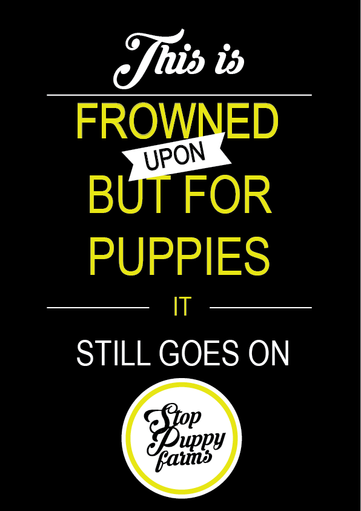

|

|
My first idea to protest against was animal abuse/hunting but after ideas
being similar to other people I decided to go with puppy farms. I researched
other protests that were related and what happens to puppies that suffer in
these farms. I came up with key words such as the puppies not having a voice,
being innocent, living in unhygienic conditions, failing to meet the dogs needs etc.
This led me to the idea of children and how innocent they are.
What if a child was in a dog cage like the puppies with messy hair, dirty clothes
and a dirty face to show how badly treated the puppies are. The cage was to similar
to someone in class so I thought about using a chain and wrapping it around a pole
in a public space, using a empty dog bowl to show failing the dogs needs and newspaper
to show unhygienic living conditions. I also brainstormed different slogans to try
come up with something short, simple and to get my point across. Such as using words
like why should they suffer, they're defenceless, so are children, both have feelings,
whys this frowned upon but the other still goes on? But taking away the 'Whys' because
we know why a child being tied to a pole is frowned upon. So my slogan ended up being
"This is frowned upon but for puppies it still goes on"
|